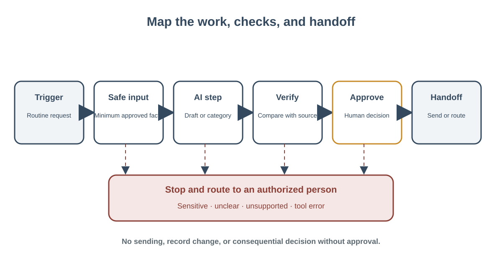

← Week 6: Build and Evaluate a Workplace Workflow
Design a Small, Bounded AI-Supported Workflow
Learning objectives: Choose what information is appropriate to share, account for privacy, fairness, accessibility, and policy, and retain human accountability.; Design a bounded professional workflow with appropriate AI or tool use, permissions, checkpoints, escalation paths, stop conditions, and evaluation.; Apply data-minimization and approval checks before sharing information with an AI service.; Match permissions, checkpoints, stop rules, and escalation to impact and reversibility.; Design a bounded, repeatable AI-supported workplace workflow with clear inputs, checks, and handoffs.
Content
Design a Small, Bounded AI-Supported Workflow
Objectives: design-ai-workflow; protect-sensitive-information; set-oversight.

Figure: A bounded workflow includes review, approval, and a path to stop or escalate.
Start with a repeatable need
A workflow is a set of steps people repeat to produce an outcome. A useful AI-supported workflow begins with a specific task, not a broad ambition such as “automate the office.” Choose a task that happens often enough to study, has a clear output, and can be tested safely. Avoid beginning with a high-stakes decision about a person. A low-risk drafting, sorting, or formatting task is easier to bound and evaluate.
Suppose a fictional neighborhood learning center receives routine questions about class schedules and registration. A coordinator currently reads each email, consults a public schedule, drafts a reply, and sends it. The organization might explore an AI step that suggests a category and prepares a draft, while the coordinator reviews and sends every response. This is concrete enough to map and compare with the current process.
Before changing anything, record the baseline. Who performs the task? What steps do they take? What information and sources do they use? How long does the full process take, including review? What quality problems matter? If you do not have access to real data, use fictional cases or a paper simulation. A baseline can be a reasonable estimate, but label it as an estimate. Do not claim measured improvements without measurement.
Map people, inputs, actions, and handoffs
Identify the requester, operator, reviewer, owner, and people affected by the result. A message reply affects the person who asked the question. A schedule summary may affect learners who rely on accurate dates. Name these groups because the workflow must work for them, not only for the person operating the tool.
List the information that enters each step. Include the source, sensitivity, and purpose. Use the minimum necessary input. For a draft based on a public schedule, the tool may need the question and current public schedule; it does not need a full inbox, contact list, or student record. If the service is not approved for the information or purpose, use a different method. In classroom exercises, keep the cases fictional.
Then list what the AI may do. Can it suggest a category? Read a source? Create a draft? Edit a file? Send a message? Change a record? These are different levels of authority. If the task is to prepare a draft, do not grant sending permission. If a workflow needs one approved public page, do not grant access to unrelated files. A narrow tool boundary makes the result easier to review and errors easier to contain.
Make the process explicit
A simple workflow map might say:
- A coordinator selects a message that appears to be routine and in scope.
- The AI receives the fictional or approved message and the current public schedule.
- It suggests a category and prepares a draft using the schedule.
- The coordinator checks the category, confirms factual claims against the schedule, and revises for clarity and accessibility.
- The coordinator sends the message through the normal communication channel.
- If the request is sensitive, urgent, unclear, outside scope, or unsupported by the schedule, the workflow stops and routes it to an authorized human.
The map reveals where judgment belongs. The system can propose a category; the coordinator decides whether that category fits. The system can draft; the coordinator verifies facts and decides what to send. The system does not decide whether a learner qualifies for a service or infer a person’s needs from unrelated details.
Build checkpoints and stop conditions
A checkpoint should name the action, evidence, and decision. “Check the answer” is weak. “Compare each date and location in the draft with the current schedule, then correct or remove any unsupported detail before sending” is specific. Put checkpoints before external actions, irreversible changes, or decisions that affect people.
Plan for failure before it happens. The source may be unavailable or out of date. A message may ask two questions at once. The AI may generate a confident answer that is not in the source. A tool may fail. A person may ask for something outside the approved task. State what happens in each case: pause, ask for clarification, route to a person, or use the normal manual process. Do not instruct the system to guess when required information is missing.
Ownership is also a boundary. Name who maintains the source, approves changes to the workflow, handles escalations, and reviews errors. Set a point to reconsider the design. If staff start sending generated drafts without review, if the source changes, or if a new tool gains additional permissions, the workflow has changed and needs review.
Keep the design accessible and understandable
Good output is usable by its intended audience. Ask whether the text is clear, whether important information is easy to find, and whether the person has a way to request help or another format. If an AI output uses jargon or omits a needed next step, the human reviewer should revise it. Accessibility is not a final polish step; it belongs in the task definition and success criteria.
Make the workflow legible to the next person who uses it. Document the purpose, allowed inputs, steps, evidence checks, human decision, and escalation path in ordinary language. Avoid unexplained terms or assumptions about a particular product. If another service could replace the current one, the process should still make sense. A workflow is durable when it explains the work, not just a set of interface clicks.
Text equivalent for the image
[Image placeholder: “A workplace workflow map.” Caption: A horizontal path runs from a defined request through minimum safe input, one AI draft or suggestion step, evidence-based human review, and delivery. A branch at uncertainty, sensitive content, missing evidence, or tool error stops the AI step and hands the case to an authorized person.]